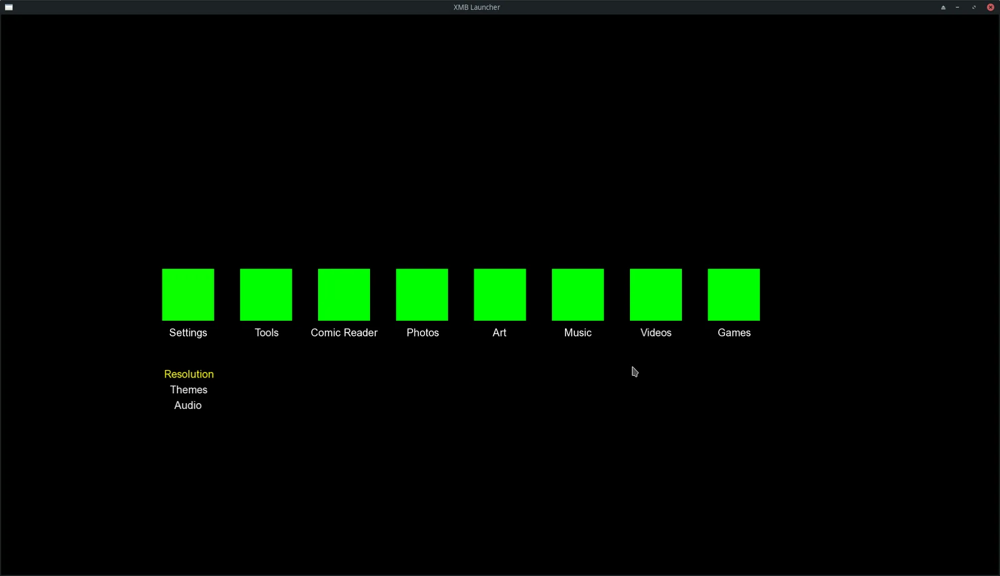
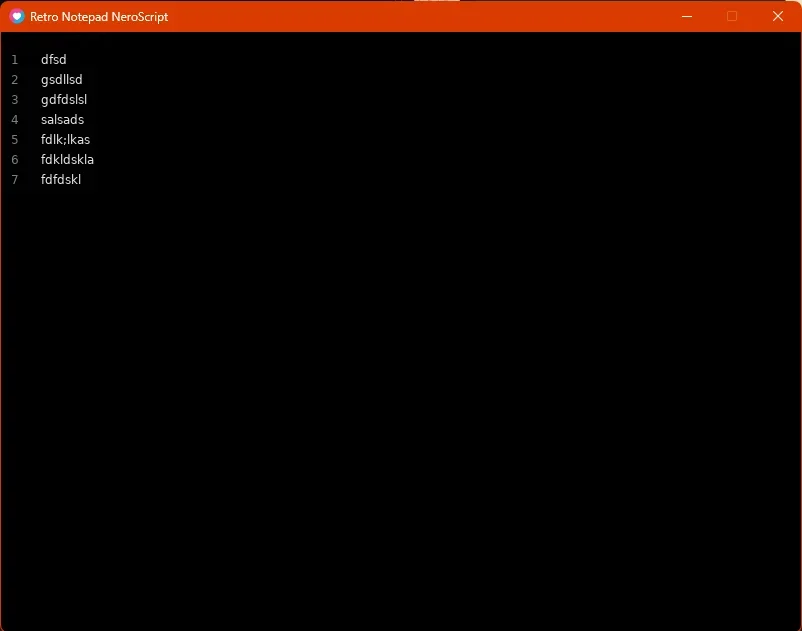

About Me
As a passionate software developer and designer, I blend my technical expertise with my creativity to create engaging applications and experiences whether on digital media or on physical.
⭐ Featured Projects
-
Nero.js — Universal JavaScript Framework GitHub
Cross-platform framework supporting PS2, PSP, PS3, Web, Desktop (NW.js), and Mobile (Capacitor). Write once, deploy everywhere.
JavaScript Node.js Cross-platform -
AviationPro — Professional Flight Planning Suite Live
Production-grade aviation software built with React, TypeScript, and Tailwind CSS. Features flight planning, CX-6 computer, weather tools, and performance calculations.
React TypeScript Tailwind CSS -
Hopeless Catch — Pixel Art Fishing Horror Game Published
Published game with atmospheric storytelling. A peaceful fishing adventure with a subtle secret.
Love2D Lua Pixel Art
HTML / CSS / JavaScript
-
XMB Wave Menu Demo
Horizontal menu with wave animations and dynamic theming
HTML CSS JavaScript -

FL Window & Door Maintenance Landing Page Live
Professional service landing page
HTML CSS JavaScript -
MG Gutters Landing Page Live
Service-focused landing page
HTML CSS JavaScript -
Restaurant Website Demo
Full landing page with menu and booking
HTML CSS JavaScript -
Business Card Builder Demo
Interactive business card design tool
HTML CSS JavaScript -
Resume Generator Demo
Dynamic resume creation and export
HTML CSS JavaScript -
Invoice Generator Demo
Professional invoice creation tool
HTML CSS JavaScript -
PDF Editor Demo
Document editing and manipulation
HTML CSS JavaScript -
Game Templates Multiple
Platformer, Space Invaders, Crossy Road clones
HTML5 Canvas JavaScript -
FreeCodeCamp Projects Multiple
Calculator, Tic Tac Toe, Survey, Technical Documentation, Landing Page, Menu
HTML CSS JavaScript
Nero.JS Framework
-
Nero.js Core GitHub
Universal component-based framework for cross-platform development
JavaScript Framework Cross-platform
NW.JS Desktop Development
-
XMB HTML Project Desktop
Full XMB interface ported to desktop with NW.js
NW.js HTML Desktop
Capacitor Mobile Development
-
XMB HTML Project (Mobile) Mobile
XMB interface adapted for mobile with Capacitor
Capacitor HTML Mobile
Web Development with Bolt & Copilot
-
AviationPro Flight Planning Suite Live
Professional aviation application with advanced features
React TypeScript Bolt -
PSP Digital Comics Demo
Comic reader interface for PSP
HTML CSS PSP UI -
PS3 XMB Layout Demo
Animated XMB interface with dynamic backgrounds
HTML CSS XMB -
Portfolio Websites Multiple
Multiple portfolio design variations
HTML CSS Portfolio
Web Development with Lovable & Copilot
-
Music Player with Vinyl/Cassette/MiniDisc Themes Demo
Retro-styled audio player
HTML CSS Retro UI -
Modernized Portfolio Demo
Contemporary portfolio design
HTML CSS Modern UI -
PSP Digital Comics (Ember UI) Demo
Comics reader with Ember UI recreation
HTML CSS Ember UI -
Windows 95 Desktop Environment Demo
Nostalgic desktop simulator with music player and visualizer
HTML CSS Win95 UI -
PhantomOffer / PhantomPipeline In Development
Job/company rating platform (in development)
React Node.js Platform -
SonicCipher Demo
Secure audio recorder application
HTML Web Audio Security
SFML with C++
-

Comic Book Reader (UI Project) Demo
Browse collection, recently added, unread, bookmarks, and options menu.
C++ SFML UI Design -

Music Player Demo
Audio playback, library/playlist system integration.
C++ SFML Audio -

XMB Launcher Demo
Earlier XMB version with icon placeholders and wave animations
C++ SFML UI/UX -
3D Graphics Projects Multiple
Rotating pyramid, triangle rendering, fluid simulation (lava lamp), wave animations, 3D teapot with rotation
C++ SFML 3D Graphics
Love2D with Lua
-

Music Player Cross-platform
Play button, volume sliders, progress bar. Cross-platform (Mac/Linux/Windows/Web).
Love2D Lua Audio -

Note Editor Demo
Line numbering and text entry functionality
Love2D Lua Text Editor -

Comic Reader Demo
Two-page display for comics
Love2D Lua UI -

Key Logger Demo
Real-time key press logging
Love2D Lua Input -
Christmas Top-Down Horror Game Demo
Festive-themed horror game concept
Love2D Lua Horror -
Aviation Projects Multiple
Flight Log, Weather, Weight & Balance, Platformer Game, PSP Clock Screen Saver, Solitaire Style, Winamp Clone, Jet Pack Joyride Clone
Love2D Lua Aviation
Unity
-
Music Player Demo
Audio playback in Unity
Unity C# Audio -
Car Game Demo
Vehicle mechanics and gameplay
Unity C# Physics
Godot
-
Music Player Demo
Audio playback in Godot
Godot GDScript Audio
Defold
-
Music Player Cross-platform
Cross-platform music player (Mac/Linux/Windows/Web)
Defold Lua Audio
Android Watch Face Studio
-
Custom Watch Face Published
First watch face created June 8, 2023
Android Watch Face Wearables
PSP Development
Minimalist SDK
-
Hello World Basic
Basic PSP program
PSP C Homebrew -
String with Different Text Color Tutorial
Text rendering tutorial
PSP C Graphics
PSPSDK Development
-
hello_world_psp Basic
Minimal Hello World using C and PSPSDK
PSPSDK C -
drawing_square_psp Graphics
Red rectangle on white background using SDL2
PSPSDK SDL2 -
drawing_input_psp Input
Controller input reading and shape drawing
PSPSDK Input -
drawing_sprite_psp Graphics
Sprite loading and display with SDL2_image
PSPSDK SDL2 -
audio_psp Audio
WAV/OGG/MP3 playback using PSP audio or SDL2_mixer
PSPSDK Audio -
sdl_square_psp SDL2
SDL2 green square with input handling
PSPSDK SDL2 -
sdl_image_psp Graphics
PNG image loading and display with SDL2_image
PSPSDK SDL2 -
sdl_mixer_psp Audio
Background music playback with pause/resume using SDL2_mixer
PSPSDK SDL2 -
sdl_ttf_psp Text
TrueType font rendering with SDL2_ttf
PSPSDK SDL2
PS1 Development with MIPS Assembly
-
Pikuma Course Projects Course
Background color manipulation, triangle & quad rendering, Gouraud shading for triangles
PS1 MIPS Assembly
PS2 Bare Metal with C
-
Bare Metal PS2 Project In Progress
Low-level PS2 development (currently running, visual output in progress)
PS2 C Bare Metal
Game Boy Assembly
-
Loading Screen Demo
Game Boy assembly program with loading screen display
Game Boy Assembly Z80